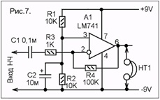

Эти микросхемы состоят из двух независимых операционных усилителей с высоким коэффициентом усиления и внутренней частотной компенсацией, специально разработанных для работы от одного источника питания в широком диапазоне напряжений. Сток источника питания с низким энергопотреблением не зависит от величины напряжения источника питания.
Функции:
Компенсация частоты реализована внутри
Большое усиление постоянного напряжения: 100 дБ
Широкая полоса пропускания (единичное усиление): 1,1 МГц (с температурной компенсацией)
Очень низкий ток питания на канал практически не зависит от напряжения питания
Низкий входной ток смещения: 20 нА (с температурной компенсацией)
Низкое входное напряжение смещения: 2 мВ
Низкий входной ток смещения: 2 нА
Диапазон входного синфазного напряжения включает отрицательные шины
Дифференциальный диапазон входного напряжения равен напряжению источника питания
Большой размах выходного напряжения: от 0 В до (В CC + - 1,5 В)
Ноябрь 2017 г.
Области применения включают усилители-преобразователи, блоки усиления постоянного тока и все обычные схемы операционных усилителей, которые теперь можно более легко реализовать в системах с одним источником питания. Например, эти схемы могут напрямую запитываться стандартным напряжением 5 В, которое используется в логических системах, и легко обеспечивает необходимую интерфейсную электронику без дополнительного источника питания.
В линейном режиме диапазон входного синфазного напряжения включает землю, а выходное напряжение также может качаться на землю, даже если оно работает только от одного напряжения источника питания.
http://radioamator.ru/nachinayushchim/prakticheskie-sovety/1086-eksperimenty-s-opreratsionnym-usilitelem-pri-odnopolyarnom-pitanii

На рисунке 7 показана схема усилителя НЧ на основе ОУ, питающегося от одно-полярного источника питания. Переменное напряжение НЧ поступает на инверсный вход ОУ через конденсатор С1. Резисторы R3 и R4 образуют цепь ООС, которая устанавливает коэффициент усиления. Величина коэффициента усиления, как и в схеме с двуполярным питанием зависит от соотношения резисторов R3 и R4. Но, чтобы ОУ мог работать в схеме с однополярным питанием на его прямой вход подается постоянное напряжение смещения, равное половине напряжения питания, полученное с помощью резисторов R1 и R2. На схеме рис. 7 усилитель нагружен высокоомными наушниками НТ1 («Тон» или аналогичными). Их можно подключить к выходу и подать на вход сигнал НЧ или просто прикоснуться пальцем к выводу С1, при этом в наушниках будет слышен усиленный сигнал НЧ или фон переменного тока. Усилитель по схеме на рис. 7 является инвертирующим, потому что входной сигнал поступает на его инверсный вход. В результате фазы сигнала на входе и выходе противоположны.